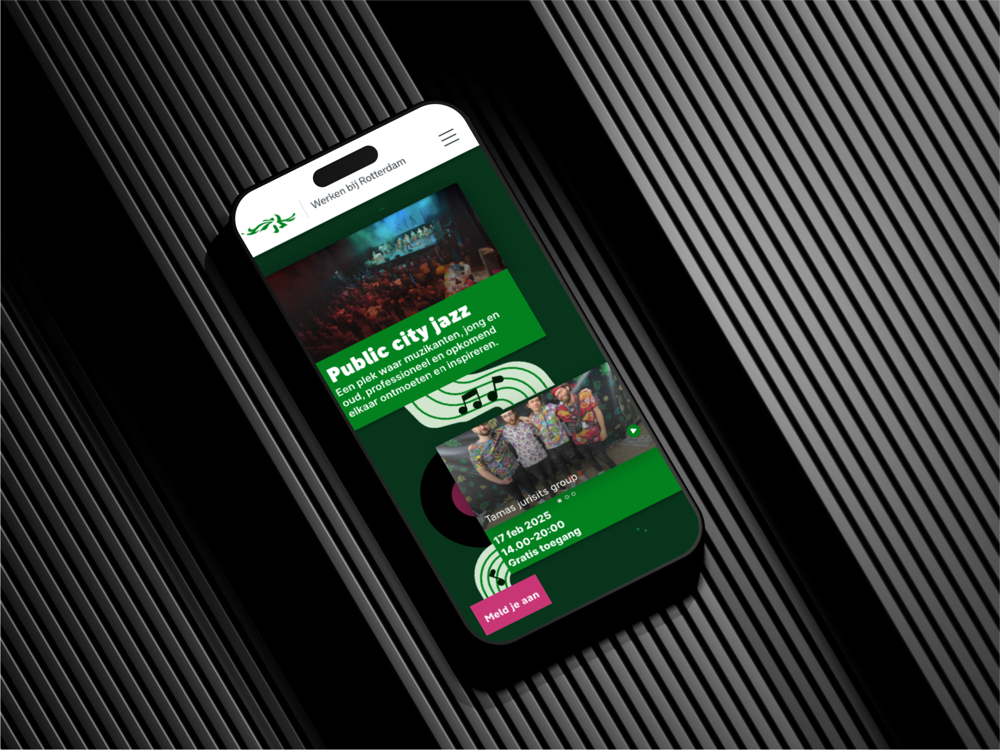
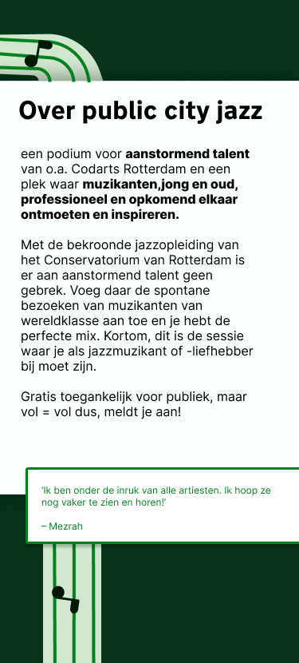
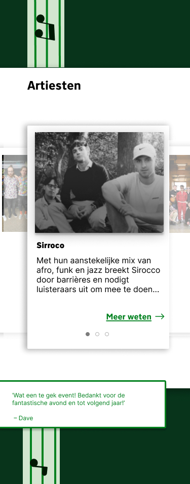
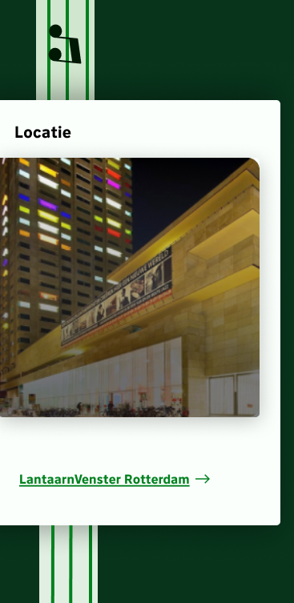
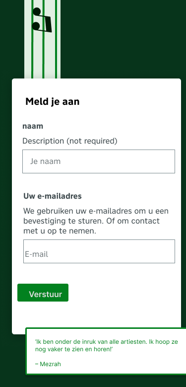
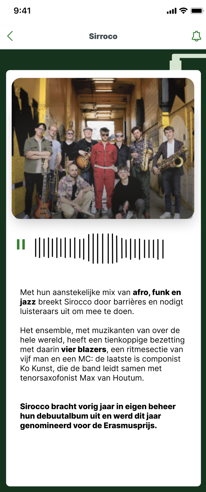

Public City Jazz
The one-pager for Public City Jazz, aimed at jazz enthusiasts.
About the Assignment
The fictional assignment for the "Municipality of Rotterdam" is to organize an event for young artists and bands that they promote through a music education program.
The goal was to create an attractive brand identity combined with a one-pager design.
Problem Statement
The one-pager should guide the user smoothly through the page and include a music listening feature that allows the user to interact easily.
My Role
- UI Design
- Concept Development
- Interface Design
- UX Design
- Functional Design
- Brand Identity
- Sub-style
- Target Audience Focus
- User Experience
- Innovator
- Brainstorming
Extra Feature
The music listening feature was placed on the homepage, so the user can immediately interact. For this, I created a minimalist MP4 page to stay in line with the vintage jazz theme.
Demo
Check out a live demo of the website or view the code on GitHub:
Live Demo View on GitHubProject Images




